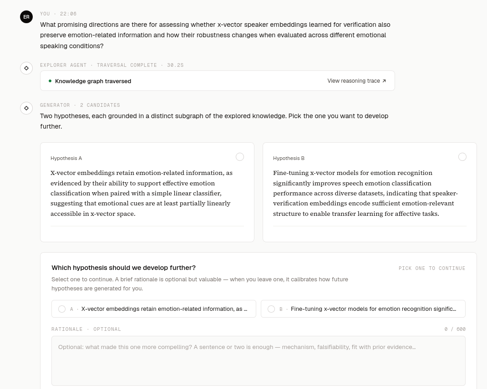

interfejs i wyniki
Kuźnia Hipotez w działaniu.
Badacz zadaje pytanie — eksplorator przeszukuje graf — generator proponuje dwie hipotezy. Wybór + uzasadnienie kalibrują przyszłe generacje.

// interfejs: wybór hipotezy A/B, widok grafu i panel uzasadnienia
hipoteza generyczna
[Wklej tutaj treść hipotezy wygenerowanej przed personalizacją]

hipoteza spersonalizowana
[Wklej tutaj treść hipotezy wygenerowanej po uwzględnieniu preferencji i personalizacji badacza]